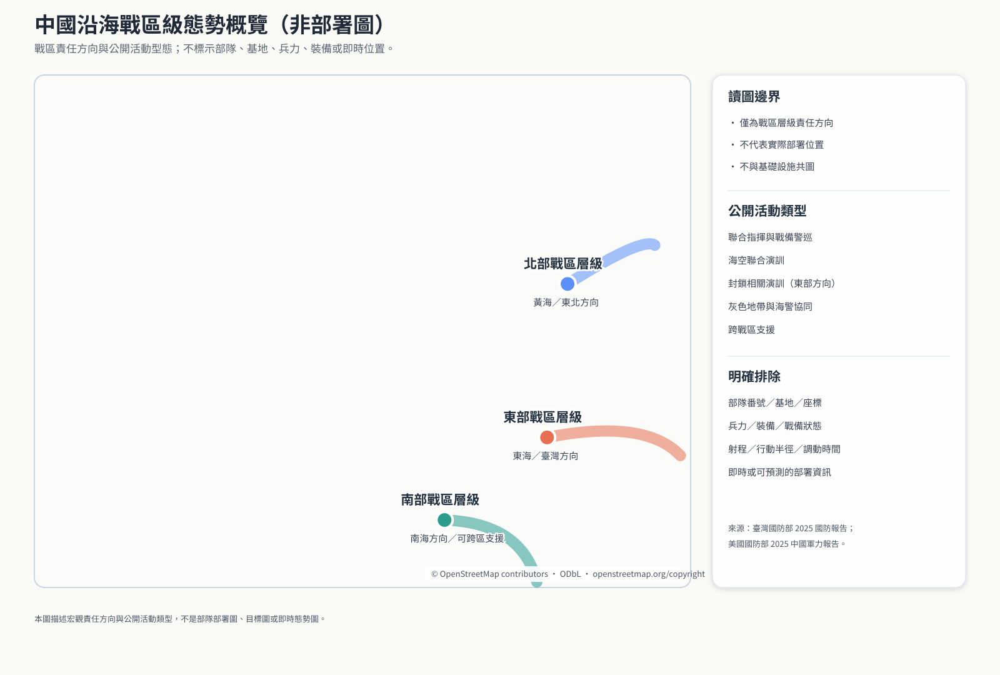

分析尺度
經濟資料以省級行政區彙整；地圖點位只是行政區代表點，不是工廠、港口、電廠或通訊節點。
公開資料圖鑑2026.08.13
穿透表象，看見省級經濟功能與供應鏈關聯
把 31 個省級行政區的代表產業、公共功能、上游投入與下游連結放進同一個可探索介面。這是一份支援政策、民防與關鍵服務持續運作的研究工具，不是目標清單。
01 / PROVINCIAL ATLAS
搜尋或篩選省份，點選地圖標記查看其公共功能、代表產業與供應鏈關係。標記是行政區代表點，不是設施位置。
也可從文字清單選取；最多加入三個省份比較。
SELECTED PROVINCES
02 / RESILIENCE LENS
比較的是外部中斷、制裁、封鎖風險或市場衝擊下的系統壓力，不代表軍事目標價值。
03 / COASTAL CONTEXT
僅呈現宏觀責任方向與公開活動型態；不含部隊番號、基地、兵力、裝備、射程、戰備狀態或即時位置。

04 / METHOD & BOUNDARY
經濟資料以省級行政區彙整；地圖點位只是行政區代表點，不是工廠、港口、電廠或通訊節點。
產品與供應鏈欄位呈現代表性集群和跨區連結。信心標籤反映公開來源的一致性，不代表完整盤點。
不提供精確設施、容量與瓶頸，不提供部隊部署、打擊排序、癱瘓方法或損害最佳化。
支援公共政策、民防、供應鏈分散、風險溝通及能源、糧食、金融、物流與通訊的持續運作。